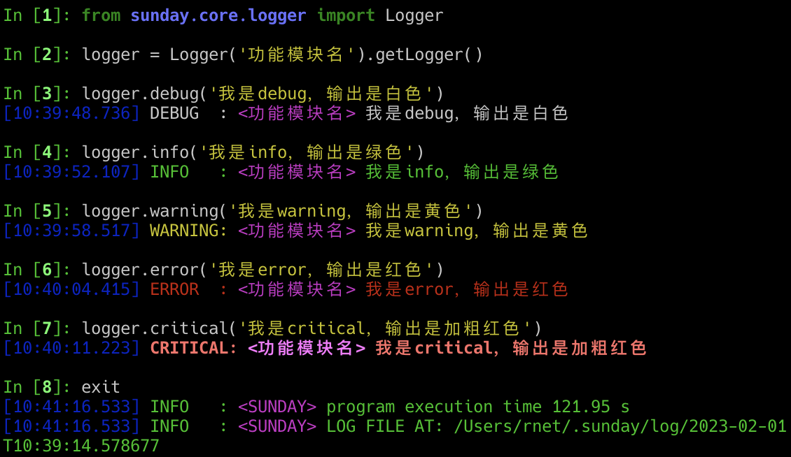
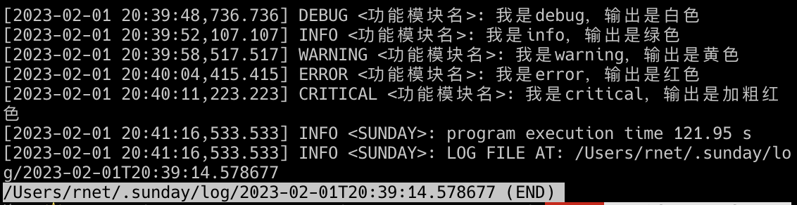

logger
超级好用的日志工具
API说明
sunday.core.Logger(name, level='', format='')日志管理与控制，日志分类、打印与缓存 Usages: >>> from sunday.core.logger import Logger >>> logger = Logger('自定义名称').getLogger() >>> logger.debug('日志打印输出') Args: name(str): 日志分类名称 level(str): 日志打印级别，DEBUG、INFO、WARNING、ERROR、CRITICAL format(str): 日志打印格式 Returns: logger
getLogger(self)提示
在$SUNDAY_ROOT/config.ini文件中可以配置日志的显示格式与显示级别，优先级低于Logger实例化传入，参见配置内容.
PYSunday的日志模块使用很简单，实例化后的日志对象提供6种等级的日志打印方式：debug、info、warning、error、critical
示例
如下示例使用的显示格式为：%%(blue)s[%%(asctime)s.%%(msecs)-3d] %%(log_color)s%%(levelname)-7s: %%(purple)s<%%(name)s> %%(log_color)s%%(message)s
from sunday.core import Logger
logger = Logger('功能模块名').getLogger()
logger.debug('我是debug，输出是白色')
logger.info('我是info，输出是绿色')
logger.warning('我是warning，输出是黄色')
logger.error('我是error，输出是红色')
logger.critical('我是critical，输出是加粗红色')
程序执行后会生成日志文件，可通过查看日志文件检查程序执行是否符合程序执行预期：
less /Users/rnet/.sunday/log/2023-02-01T20:39:14.578677
setLogLevel方法
该方法可以修改所有已经存在的Logger实例的日志打印等级，如果是命令工具可以直接通过命令入参的--loglevel控制，不建议独立使用
sunday.core.setLogLevel(level)修改所有已经存在的日志实例等级 Args: level(str): 日志打印级别，DEBUG、INFO、WARNING、ERROR、CRITICAL